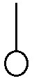
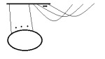

Tensor notation
Language affects the way you think, often subconsciously. The easier and more natural something is to express in a language the more likely you are to express it. This is especially true of mathematical thought where the language is very precise.
I know three types of notations for tensors and each seem to be useful in different situations and gives you a different perspective on how tensors “work”. [Technical Note: I will assume all vector spaces are finite dimensional so \(V\) is naturally isomorphic to \(V^{**}\)]
The first is the “functional” notation. An \((r,s)\) tensor on a vector space \(V\) over a field \(F\) is a function \(T: \overbrace{V^* \times \cdots \times V^*}^{\mbox{r terms}} \times \overbrace{V \times \cdots \times V}^{\mbox{s terms}} \to F\) that is linear in each variable separately. (\(V^*\) is the dual of \(V\), that is all linear functions from \(V\) to \(F\)).
That is a tensor is something that takes r covectors and s vectors (all ordered) and gives us a number, and does so in a linear way.
The second is the index notation. An \((r,s)\) tensor on an \(n\)-dimensional vector space on a field \(F\) is a symbol with \(r\) “upstairs” indices and \(s\) “downstairs” indices where the indices are in the range \(\{1,\ldots,n\}\) : \(T^{i_1,\ldots,i_r}_{j_1,\ldots,j_s}\) . Substituting in any particular set of indices gives you an element of the field. It comes hand in hand with the Einstein summation convention: any repeated upstairs and downstairs indices are implicitly summed over, e.g. \(T^{ij}_{k}v_{i} = \sum_{i=1}^{n} T^{ij}v_{i}\) .
The third notation I know of is Penrose’s Graphical tensor notation. An \((r,s)\) tensor over a field \(F\) is a “blob” with \(r\) arms and \(s\) legs.

If there are no arms or legs sticking out it’s just an element of the field F.
These objects are all closely related. To go from the functional notation to the index notation choose a basis for the vector space \(V\), \(\{e_1,\ldots,e_n\}\) . Then we can pick a basis on the dual space \(V^*\), \(\{e^1,\ldots,e^n\}\), by requiring \(e^i(e_j) =\delta^i_j\) (the Kronecker delta; \(1\) if \(i\) and \(j\) are equal, otherwise \(0\)). [Why write the dual basis as \(e^{i}\) ? It gives us the nice upstairs-downstairs relationship for index notation. It’s also important to distinguish the vector space from its dual.]
The \((r,s)\) tensors also form a vector space of dimension \(n^{r+s}\) and we can form a basis for tensors using the tensor product \(\otimes\) . The tensor product of an \((r,s)\) tensor and an \((r’,s’)\) tensor is an \((r+r’,s+s’)\) tensor, and its action on \(r+r’\) covectors and \(s+s’\) vectors is to put the first \(r\) covectors and \(s\) vectors in the first tensor, put the rest in the second tensor – this gives you two numbers and you multiply them together. Then a basis for \((r,s)\) tensors is \(e_{i_1} \otimes \cdots e_{i_r} \otimes e^{j_1} \otimes \cdots e^{j_s}\) where each index runs from \(1\) to \(n\).
Given a basis we can talk about the components. For instance for a vector \(v\) its components are \(v^i:=e^i(v)\) and the vector can be written \(\sum_{i=1}^{n} v^i e_i\) . Note that the \(e_i\) are vectors but the \(v^i\) are just numbers (though they still form a vector space dual to \(V\)); but having fixed our basis these components completely determine our vector by linearity. Also note that if the basis index is downstairs the component index is upstairs. [This almost surely explains why physicists write vectors with upstairs indices \(v^i\) when downstairs would seem more natural].
Similarly we can talk about the components of a tensor, a general \((r,s)\) tensor can be written \(T=T^{i_1,\ldots,i_r}_{j_1,\ldots,j_s} e_{i_1} \otimes \cdots e_{i_r} \otimes e^{j_1} \otimes \cdots e^{j_s}\) . If we fix our basis there’s no need to write it out at the end every time – so let’s just drop it off and understand it’s implied. This gives us index notation. We can immediately see that the action of T on the vectors \(v_a = v_a^{i} e_i\) (the subscript “\(a\)” here is a label and not an index) and the covectors \(w_b = w_{b,i} e^i\) for \(a\) in \(1\) to \(s\) and \(b\) in \(1\) to \(r\) is
\(T(w_1,\ldots,w_r,v_1,\ldots,v_s) = T^{i_1,\ldots,i_r}_{j_1,\ldots,j_r} w_{1,i_1} \cdots w_{r,i_r} v_{1}^{j_1} \cdots v_s^{j_s}\) .
It is important to note that under a change of basis the components of the tensor must transform in a certain way for them to be well defined (this is why such an emphasis is put on the indices transforming ‘covariantly’). [There is another, coordinate-free interpretationof index notation, but the one I have given is standard].
To see how the diagram notation fits with the functional notation, we see vectors look like

and covectors look like

(with different shaped/coloured blobs for different vectors), so the action of \(T\) on \(r\) vectors and \(s\) covectors is obtained just from ‘plugging’ together the legs and arms with those of
.
We can also connect it to the index notation: if we label the arms (typically left to right) \(i_1,i_2,\ldots,i_r\) and the legs (typically left to right) \(j_1,j_2,\ldots j_s\) we can think of it as representing the components \(T^{i_1,\ldots,i_r}_{j_1,\ldots,j_s}\) .
These are just the basics, the devil is in the detail. I find it much easier to think in the diagrammatic notation (and to a lesser extent the index notation) – they are more powerful because they are less versatile. The only reason we can draw (or write) tensors in this specific way is because of some of their linear properties; this is hidden in the functional notation, we can write an arbitrary non-linear function in the functional notation.
To compare the languages here is an article outlining the hodge star in functional notation [watch out, there are some errors], here is an expression in index notation, and I think this is the diagram for it: .
Most mathematics textbooks that cover tensors will primarily use the functional notation, but many will also mention the index notation (e.g. Marsden, Ratiu and Abraham). If you read an advanced Electromagnetism or Mechanics physics textbook (or a general relativity book) you will get a good working introduction to the index notation.
Diagram notation is much harder to find: the original description I read was in Penrose’s Road to Reality where (like everything else he covers) it is described in just enough detail to suss out what he means if you think about it for long enough. The best description I’ve seen is in Cvitanović’s Group theory book where he uses variations on it to classify the semisimple Lie groups using nothing more than a few thousand pictures! (What I’ve read so far is excellent). The description is somewhat off the main tensor track but the major points seem to be covered in there. For some other references and other types of diagrammatic notations see this blog post.